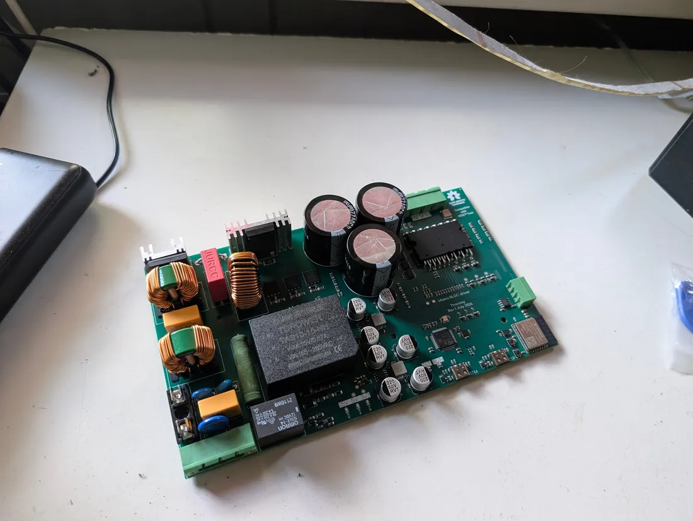

Work 04 Mains drive
Mains in.
Compressor out.
A VESC-compatible three-phase compressor drive designed for 230 V AC mains. With preliminary european EMC Compliance.

01The brief
The original problem was to run a compact three-phase compressor drive directly from 230 V AC while keeping VESC firmware and tools. That means fitting the entire grid interface on board too: EMI filter, inrush limiting, rectifier, active PFC and DC bus.
A diode bridge and bulk capacitor alone would draw current in pulses. The UCC28180 CCM boost stage is intended to shape that current and gives the design a route towards IEC 61000-3-2 harmonic limits. The standard still needs measurements, of course.
02Specification
| Input | 230 V AC single phase |
|---|---|
| Rectified bus | ≈ 325 V DC nominal · before PFC |
| PFC output | Regulated boost-follower bus · feeds the IPM |
| PFC | TI UCC28180D — CCM boost PFC |
| Power bridge | Infineon IKCM10H60GAXKMA1 IPM — 10 A / 600 V |
| MCU | STM32F405RGTx running VESC firmware |
| Connectivity | VESC Express (ESP32) — Wi-Fi, BLE, CAN bridge |
| CAN | Dual isolated interfaces |
| USB | USB Type-C for VESC Tool |
| Debug | Tag-Connect SWD |
| Sensing | Phase current U/V/W · bus and phase voltage |
03Architecture
The schematic uses ten hierarchical sheets, so the mains input, PFC, motor phases, isolation and control sections can be reviewed without following wires across one enormous page.
The power path runs through an EMI filter, inrush limiter and bridge rectifier to a nominal 325 V rectified bus, then through the PFC stage. The regulated PFC output feeds an Infineon IKCM10H60 intelligent power module; 325 V is therefore the rectifier-side figure, not a fixed output rating for the boost stage. The module integrates gate drivers and bootstrap, while a separate isolation barrier protects the control domain.
04Key design decisions
Isolation gets its own sheet. Gate signals and fault lines cross a dedicated barrier, and both CAN interfaces are isolated too. Making that boundary visible in the schematic also makes it harder to lose during a review.
Boost-follower PFC. The controller includes boost-follower control for its efficiency benefit rather than simply regulating a fixed high-voltage output. The schematic’s own note gives the trade-off: the software might not like the regulation loop. That is a bench question, not a solved feature.
VESC Express handles connectivity. An ESP32 module provides Wi-Fi, Bluetooth and a CAN bridge. Commissioning and monitoring can use existing VESC tools instead of another custom application.
Service access is on the board. Tag-Connect SWD, status LEDs and USB-C for VESC Tool cover programming and debugging without extra bodge wires. Other boards in this portfolio have not always been so lucky.
05Compliance targets
| IEC 61000-3-2 | Harmonic current emissions — active PFC; measurement still required |
|---|---|
| IEC 60335-2-34 | Particular requirements for motor-compressors |
| EN IEC 63000 | RoHS technical documentation |
06Compliance and safety
Active PFC is intended to reduce harmonic-current emissions, but it does not make the board certified. IEC 60335-2-34 for motor-compressors and EN IEC 63000 for RoHS documentation also remain integration and documentation work, not boxes ticked by a schematic.
The rectified and PFC buses operate at lethal voltages, roughly 325–400 V depending on the node and operating point. Enclosure, creepage, clearance and fusing are part of the design rather than accessories, and this is not a beginner mains project.

